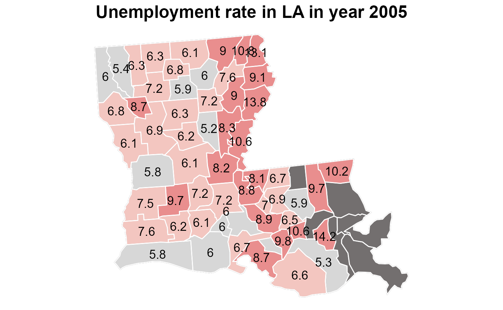

group-vignette.RmdIn this package, we want to introduce an easy method in visualization the census data by geographic and time. We will use the USDA published unemployment and household income data as the original data source. Since it contains all the county, state and nation levels data from 2000 to 2022. And when visualization the data by geographic, we will the usmap::us_map() for each county’s longitude and latitude.It totally including six packages clean, unemployment_rate, unemployment_rate_time, global, medianhhimcome and pop.
Here are links to our github repository and website.
We first read the CSV file from the Unemployment and median household income for the U.S., States, and counties, 2000-20 by using the read.csv().
file<-read.csv("https://www.ers.usda.gov/webdocs/DataFiles/48747/Unemployment.csv")
head(file)
#> FIPS_Code State Area_name Attribute Value
#> 1 0 US United States Civilian_labor_force_2000 1.426016e+08
#> 2 0 US United States Employed_2000 1.369049e+08
#> 3 0 US United States Unemployed_2000 5.696723e+06
#> 4 0 US United States Unemployment_rate_2000 3.994853e+00
#> 5 0 US United States Civilian_labor_force_2001 1.437865e+08
#> 6 0 US United States Employed_2001 1.369780e+08The raw data contains all the census information in one column Attribute, the structure of the Attribute is Category_name_year.
Other than Attribute, we also need to restructure the state and Area_name column. Since in this database, we have 3 level, the county, state and national data.
head(unique(filter(file,State=="NJ")[2:3]))
#> State Area_name
#> 1 NJ New Jersey
#> 87 NJ Atlantic County, NJ
#> 176 NJ Bergen County, NJ
#> 265 NJ Burlington County, NJ
#> 354 NJ Camden County, NJ
#> 443 NJ Cape May County, NJBy the example of New Jersey, We find out, all national information is collected in the State="US", Area_name="United States". The state level information is collected in State= abbreviation , Area_name= full spelled. The county data is collected in State=abbreviation, Area_name=County name, Abbrevation.
This function is a simple application of dplyr package in restructuring the raw data. First, since the year is always in form of 20xx, we can use dplyr::seperate(...,...,sep = -4) to separate the category and year. Then, we delete the duplicate Abbreviation in State and Area_name, and county/parish in the Area_name by gsub().
URL: The raw csv file URL from USDA site
file=dataclean("https://www.ers.usda.gov/webdocs/DataFiles/48747/Unemployment.csv")
str(file)
#> 'data.frame': 290441 obs. of 7 variables:
#> $ FIPS_Code: int 0 0 0 0 0 0 0 0 0 0 ...
#> $ State : chr "US" "US" "US" "US" ...
#> $ Area_name: chr "United States" "United States" "United States" "United States" ...
#> $ state : chr NA NA NA NA ...
#> $ Attribute: chr "Civilian_labor_force_" "Employed_" "Unemployed_" "Unemployment_rate_" ...
#> $ year : num 2000 2000 2000 2000 2001 ...
#> $ Value : num 1.43e+08 1.37e+08 5.70e+06 3.99 1.44e+08 ...The government does not collect all the attributes annually. Only Civilian_labor_force, Employed, Unemployed and Unemployment_rate have been fully collected. And for some year, such as 2005 and 2006, they didn’t collect all counties’ data for employment. This may result some problem when we visualize the data later.
plotunemployed(file, 2018, "NJ")
#> Warning in showSRID(uprojargs, format = "PROJ", multiline = "NO", prefer_proj =
#> prefer_proj): Discarded datum unknown in Proj4 definition
## 2019 median household income in county level for a specific state.
plotmedianhouseholdincome(file,"NJ")This function is used to plot the unemployment rate of selected state along with years.
The required aesthetics are:
file: The clean up file from USDA sitelocal.name: Selected state in the data. If it’s not a vaild state name, it shows “Error! Not a state!”The example shows unemployment rate in IA along with years.
plotunemployed_time(file,"IA")We use the state level data for this unemployment rate vs time plot. We also compared the state level unemployment rate with the whole nation, to figure out whether the chosen state has a different trend compared with the whole nation.
This function is used to plot top 10 unemployed county histogram in selected state and a year.
The required aesthetics are:
file: The clean up file from USDA siteyr: The selected year from 2000 to 202. If the year is out of range [2000, 2020], it shows “Error! Not a valid year!”.State.name: Selected state in the data. If it’s not a vaild state name, it shows “Error! Not a state!”The example shows top 10 unemployed counties in IA in 2011 histogram.
stateunemployed(file,2011,"IA")
We rank the top 10 counties in Iowa state. The histogram represent the unemployment population in each county, and later in shiny app, for each county we calculate the weight of this population in whole state.